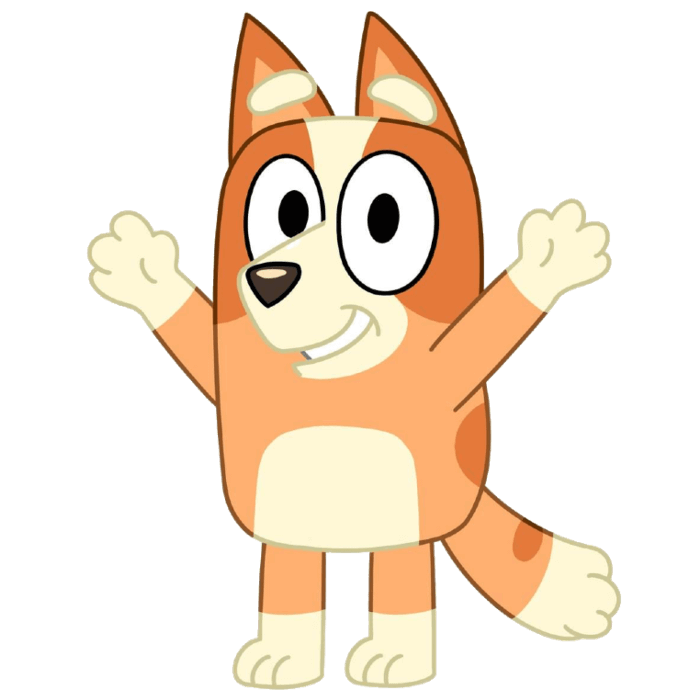

Bluey es una cachorra de raza Blue Heeler inagotable que vive con su mamá, su papá y su hermana pequeña Bingo.
Le gusta reír y divertirse, pero sobre todo le encanta jugar con su familia.
Bluey transforma los acontecimientos cotidianos de la vida de su familia en aventuras extraordinarias.
Esto implica juegos de rol, y ya sea taxista, gerente de hotel o sirena,
le encanta fingir que es una adulta haciendo cosas de adulta.
Bluey también es infinitamente curiosa.
Incluso cuando está nerviosa por probar algo nuevo, como caminar hasta el arroyo o ir al cine, siempre descubre algo maravilloso sobre el gran mundo que la rodea.
Lo más importante en la vida de Bluey es su familia y sus amigos y le encanta compartir sus nuevos juegos, canciones y aventuras salvajes con ellos.

"¡No quiero una valiosa lección sobre lima! ¡Solo quiero un helado!"
Bingo es una bolita de energía! Es amable, curiosa, decidida y le encanta reír.
Más que nada, le encanta sumergirse en juegos de simulación con su hermana mayor, Bluey, sus amigos y su familia.
Ya sea que se imagine a sí misma como Snowdrop, Tap Girl o una mariposa revoloteando, su creatividad no tiene límites.
Si bien Bingo a veces se deja llevar por su propio pequeño mundo, atesora profundamente sus momentos de juego con Bluey.
A veces, seguir el ritmo de los juegos de su hermana puede ser un poco desafiante, pero Bingo encuentra su camino.
A Bingo le encantan los nuevos descubrimientos y a menudo se siente cautivada por las pequeñas maravillas del mundo,
como una flor que florece o un pequeño insecto que se abre camino a través de una hoja.
A veces puede perder la noción del tiempo, pero es muy buena viviendo el momento y estando presente con su familia.

"¡Pobre bichito en la pared, nadie que lo quiera en absoluto!"
Regresar a la página principal